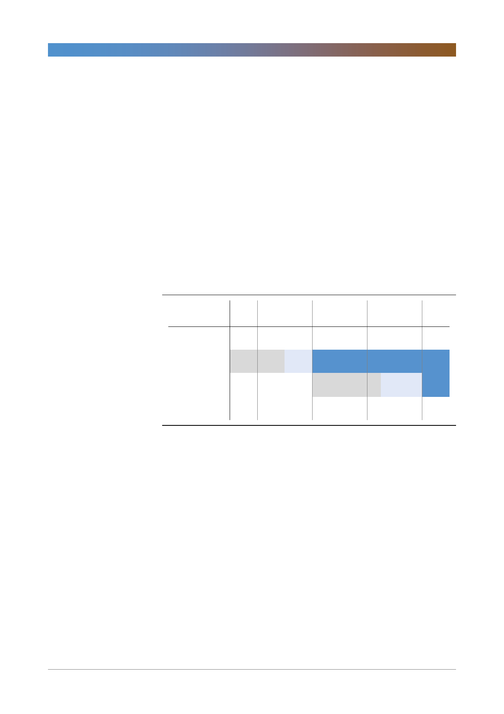

LG디스플레이(034220)
대형 OLED 설비투자는 시기조절과 효율성 제고 필요
대형 OLED 설비투자의 타이밍과 효율성 제고가 절실하다. 현재 대형 OLED 설
비투자는 중국 광저우의 8세대 라인과 국내 10.5세대 라인을 동시에 진행 중이
다. 10.5세대 라인의 경우, 올해에만 9조원 설비투자 중 1.5~2.0조원이 투입되며
내년에는 더 많은 설비투자가 필요할 것이다. 하지만, 생산은 2020년 이후에나
시작될 수 있다. 그것도 LCD를 생산할 지 OLED를 생산할 지 불투명하다. 중소
형 OLED와 마찬가지로 현금 여유가 많아 투자를 장기적으로 진행할 수 있는 상
황이면 장기 성장을 위한 투자를 병행해야 하지만 지금은 그럴 여유가 없다. 당장
수요가 있는 8세대 OLED라인 투자만 진행하기에도 자금이 충분치 않다. 게다가
10.5세대 투자는 100% OLED TV를 위한 투자도 아니다. 2~3년 내에 OLED
TV 시장이 확대되지 않을 경우를 대비해 대형 LCD TV패널을 생산하기 위한 복
안의 역할도 있다. 여전히 LG디스플레이는 OLED TV패널 사업에 대한 확신이
부족한 듯하다.
[그림 4] LG디스플레이 10.5세대 투자 및 가동 시기 일정
(생산량: MG '000 장/월)
LG디스플레이
2017
2018
2019
2020
2021
3Q17 4Q17 1Q18 2Q18 3Q18 4Q18 1Q19 2Q19 3Q19 4Q19 1Q20 2Q20 3Q20 4Q20 1Q21 2Q21
P10 10.5G phase 1 (LCD, 30K) Equipment PO
Install
Ramp-up
P10 10.5G phase 2 (OLED, 30K)
Equipment PO
Install
Ramp-up
자료: IHS, 한국투자증권
8세대 LCD라인 OLED로 전환 필요
작년 7월 LG디스플레이가 OLED 설비투자 중장기 계획을 발표했을 때 시장에서
가장 크게 실망했던 부분이 8세대 LCD라인의 OLED 전환 투자계획이 빠졌다는
점이었다. 당시 시장이 전환투자를 기대했던 이유는 크게 두 가지다. 우선, LCD
업황이 이미 하락하기 시작했다. LCD패널 가격이 작년 3월부터 하락하기 시작했
고, 2018년에는 BOE의 10.5세대 가동으로 공급과잉이 심화될 것으로 예상했다.
그래서 시장은 LG디스플레이가 8세대 LCD라인의 OLED전환을 통해 LCD수급
도 안정화시키고 OLED 투자 부담도 낮추는 의사결정을 기대했다. 하지만, LG디
스플레이는 당시 LCD사업의 수익성이 높다는 이유로 OLED 신규라인 투자만 결
정했고, 이 과정에서 부족한 자금을 확보하기 위해 중국 지방정부와의 합작사 설
립을 결정했다. 향후 회사의 주요한 성장사업을 합작을 통해 진행하기로 결정한
것이다. 이후 LCD 패널가격 하락이 지속되면서 수익성은 악화됐고 현금은 더욱
부족한 상황이 됐다. 중국 투자는 우리 정부, 중국 정부 모두로부터 승인이 지연
되면서 투자 불확실성은 더 커졌다. 이제 국내 8세대 LCD라인의 OLED라인 전
환을 통한 투자효율성 제고가 절실한 시점이다.
4